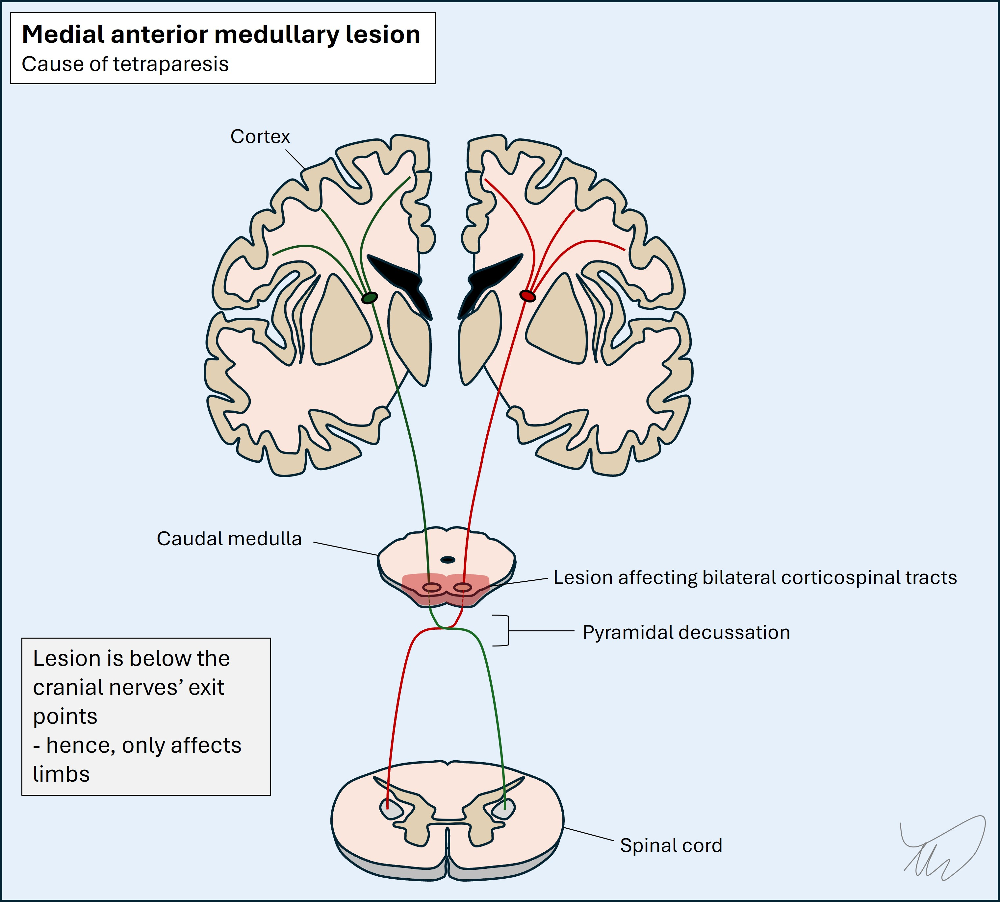
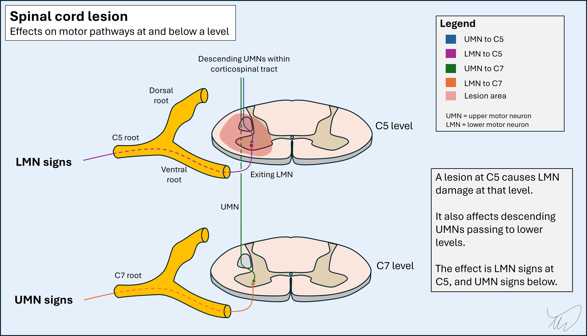

Case 13 - numb hands and stiff legs
Where is the lesion?
This patient is experiencing a quickly disabling problem with a negative impact on her daily functioning and quality of life. She has a painless motor and sensory disorder affecting all four limbs with a subacute tempo.
Brain, brainstem, cervical spine and peripheral nerve disorders can produce motor and sensory problems in all four limbs. A neuromuscular junction or muscle problem could produce motor problems but not sensory, so we can discount those.
The story is mostly motor, with minor sensory features in the hands – and while she does have some minor sensory change, many patients with weak hands describe them as ‘numb’, even in the absence of sensory abnormalities on formal testing. The weakness in the hands doesn’t necessarily suggest upper motor neuron (UMN) or lower motor neuron (LMN) origin on its own, but the rest of the motor examination does.
The findings are all UMN type, including spasticity, bilateral sustained clonus, diffusely brisk reflexes with pathological characteristics such as spreading and the presence of pectoral jerks (which can be normal but in this context is almost certainly not), plus Hoffman and Babinski signs. There is also no wasting and fasciculation – if this were an LMN issue we would likely expect those in clinically weak muscles after 2-3 months, especially if there was denervation (anterior horn cell or ventral root pathology).
There's another clue - the right leg weakness also has a ‘pyramidal’ pattern – with large flexors impaired and retained extensors. There are no LMN signs here – the motor picture is pure UMN.
There are features in all four limbs - the left leg isn’t weak but it is abnormal when she walks, it has clonus, and the reflexes are brisk, so it is also involved in this disease - there is just a bit of asymmetry. This is relevant.
Localising this further requires working through the descending bilateral motor tracts, starting with the brain.
BrainThis seems unlikely to be a cortical lesion. Bilateral UMN leg problems can arise from parasagittal lesions (particularly meningioma) compressing the medial surface of the motor cortex where the leg is represented on the homunculus. However, these would not affect the hands, which are represented on the lateral surface of the homunculus.
It is even less likely that the problem represents deeper brain tissue because no single lesion could symmetrically hit bilateral centrum semiovale or internal capsules. People can of course have multiple lesions and many do - but those tend to produce multifocal deficits, not bilateral symmetrical ones, because two simultaneous lesions are rarely in the exact same place in both hemispheres.
BrainstemBrainstem lesions can produce bilateral weakness in arms and legs - but she has no other signs to suggest this.
Brainstem pathology will often involve cranial nerve nuclei or fascicules, likewise cerebellar connections, but these are spared.
A lesion of the anterior and medial parts of the caudal medulla can sometimes affect the pyramids bilaterally and produce bilateral motor problems in all four limbs, as shown below. This is not common however, and in addition, this lady’s hands have lost pinprick sensation, a spinothalamic modality – carried in the dorsal, lateral medulla, so this wouldn't be explained neatly by a single bilateral lesion - it would be unusual to spare everything else.

Spinal cordThis leaves the cervical spinal cord. A cervical spine lesion could certainly explain this picture if there was bilateral disease. Many cord pathologies exist, affecting different tracts and at different level, so an array of clinical pictures exist. Here there is evidence of involvement of anterior and lateral components (motor and touch/pinprick sensation) while dorsal column modalities are spared.
We’ve successfully placed the lesion in two axes – it is antero-lateral and bilateral rather than one-sided. What about the long axis – we know it's in the cervical spine, but exactly how high is the lesion?
Examining the patient enables us to locate the level of a cord lesion. This is particularly straightforward if sensation is impaired, as we can often find a sensory level correlating to the lesion – above this, sensation normalises. Here this isn’t an option given the sensory findings are minimal and only in the hands, but we can still manage this with motor findings, by looking for LMN signs, and considering the spinal levels corresponding to abnormal muscles and reflexes.
Lesions in the cord produce UMN signs below them (spasticity, hyperreflexia) – given they damage descending corticospinal fibres passing through that level – and may also produce LMN signs at their level (wasting, fasciculation, hypo/areflexia), given they affect the post-synaptic LMNs at the ventral horn before and as they leave the ventral cord. Another factor is when there is additional root disease at the level, again producing LMN signs – this combination is termed myeloradiculopathy and has various causes (e.g. a disc prolapse affecting cord and roots).

A classic example of this is a C5 lesion – the biceps is weak, wasted and the biceps reflex is diminished, while everything below features UMN signs including hyperreflexia. Sometimes tapping the biceps even causes the triceps to contract due to UMN damage to it - a so-called inverted reflex
However, this patient has no LMN signs – the biceps reflex is brisk and the muscle has spasticity and is not wasted. She also has pectoral reflexes – while these appear ‘higher up’ (i.e. part of the proximal musculature), they’re not of added use in terms of placing the lesion at a given level; the roots and nerves involved are from C6-8. The biceps is the highest reflex we test (C5). The examination also doesn’t test power in muscles from higher roots (above the brachial plexus, C5-T1), with the exception of trapezius and sternocleidomastoid, which are innervated by cranial nerve XI. This has a spinal and medullary component – but solitary spinal lesions usually don't weaken it as it takes multiple roots at different levels.
Thus, we have no ability to say exactly where the lesion is, but we can say with confidence this is a high cervical lesion – a term implying C5 at the lowest, and likely a little above. Lesions here are dangerous given the phrenic nerve emerges from C3-C5.
Notably, the major deficits in the upper limbs are in the hands, in muscles innervated by roots from level C7 (finger extensors), C8 (finger flexors) and T1 (thumb and finger abductors). The more proximal muscles, innervated by more proximal roots, are not weak, even though there is evidence of UMN pathology at their level. This is quite typical in certain causes of cervical myelopathy which affect the central cord. Usually the hands are more profoundly affected than the more proximal muscles, and the arms are weaker than the legs. Clumsy, numb and 'useless' hands are a typical presenting complaint in this situation.
Summary
The patient has a high cervical myelopathy - something is wrong with the high C-spine, C5 or above, affecting the antero-lateral aspects and not the dorsal columns. Our next task is to work out the cause.
What is the lesion?